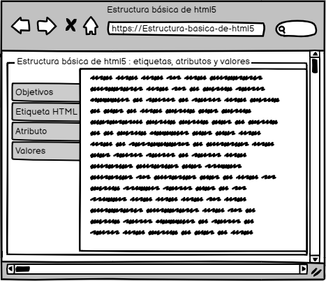

Estructura básica de html5 (etiquetas, atributos y
valores)
Objetivo general
Diseñar un OVI para el diseño de sitios web con la estructura básica de html5
Objetivos especificos
- Mostrar información de etiquetas, atributos y valores
- Diseñar un mockup de la página principal del OVI.
- Profundizar conocimientos
Materiales
Lenguaje html: https://lenguajehtml.com/html/introduccion/estructura-etiqueta-html-/
https://www.youtube.com/watch?v=X6UUAZ1FQ2A&list=PL97WzFMf575huGPlT0gBs3RrBFsPp4eqN&ab_channel=HTMLRules
https://balsamiq.cloud/sg0sspq/pv14z6s/r2278
Contenido
Etiqueta HTML
La parte esencial de una etiqueta HTML es lo que se denomina la etiqueta de apertura. Se trata de escribir el nombre de la etiqueta en cuestión, colocándola entre los carácteres . Aunque no es terminantemente obligatorio, se recomienda y considera una buena costumbre escribir las etiquetas siempre en minúsculas.
En HTML5 no se puede colocar cualquier palabra como etiqueta, sino que existen una serie específica de etiquetas, cada una con una misión y objetivo diferente. Como se puede ver, la mayoría de las etiquetas requieren que se especifique un cierre de etiqueta para saber donde termina de actuar. Se caracteriza en que se escribe igual que la etiqueta de apertura, pero con la barra / inmediatamente después del signo menor (o signo apertura).
Atributo
En algunas etiquetas HTML, existen algunos atributos específicos (que pueden ser opcionales u obligatorios). Los atributos determinan cierta información sobre la etiqueta (o su modo de actuar) y generalmente van asociados a un valor determinado. Este par atributo-valor se escribe después del nombre de la etiqueta, separándola por espacio y antes del carácter > de la etiqueta de apertura. Existen tres tipos de atributos dependiendo sus valores:
- Conjunto finito de valores: Son los atributos en los que puedes especificarle una serie de valores limitada. Cualquier otro valor que no sea uno de ellos, no será válido.
- Valores libres: Son los atributos en los que puedes especificar un valor libremente, como una dirección URL o un texto, y no existe una serie de valores específicos para escribir.
- Valores booleanos: Son los atributos que deben tener un valor verdadero (true) o un valor falso (false). En HTML5 estos atributos se escriben sin valor (solo el atributo) si son verdaderos y se omiten para indicar que son falsos.
Maquetación
